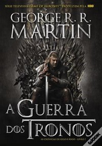
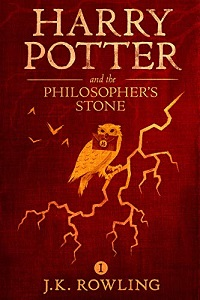
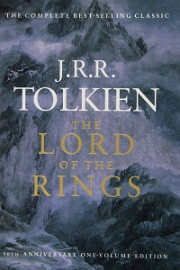
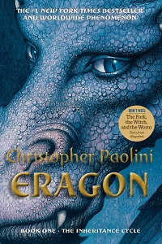

Fantasia
A realidade que vivemos pode não ser suficiente para os leitores que sonham com novos mundos povoados por seres mágicos. Assim, a literatura fantástica é bastante popular, ocupando um lugar especial no coração e no imaginário de muita gente.
| Top 5 | ||
|---|---|---|
| Game Of Thrones |
Quando Eddard Stark, lorde do castelo de Winterfell, recebe a visita do velho amigo, o rei Robert Baratheon, está longe de adivinhar que a sua vida, e a da sua família, está prestes a entrar numa espiral de tragédia, conspiração e morte.
Durante a estadia, o rei convida Eddard a mudar-se para a corte e a assumir a prestigiada posição de Mão do Rei. Este aceita, mas apenas porque desconfia que o anterior detentor desse título foi envenenado pela própria rainha: uma cruel manipuladora do clã Lannister. Assim, perto do rei, Eddard tem esperança de o proteger da rainha. Mas ter os Lannister como inimigos é fatal: a ambição dessa família não tem limites e o rei corre um perigo muito maior do que Eddard temia! Sozinho na corte, Eddard também se apercebe que a sua vida nada vale. E até a sua família, longe no norte, pode estar em perigo. |
 |
| Harry Potter and the Philosopher's Stone |
Harry Potter, o personagem dos livros de J. K. Rowling, não é um herói habitual. É apenas um miúdo magricela, míope e desajeitado com uma estranha cicatriz na testa.
Estranha,porque afinal encerra misteriosos poderes que o distinguem do cinzento mundo dos muggles (os complicados humanos) e que irá fazer dele uma criança especialmente dotada para o universo da magia. Admitido na escola Howgarts onde se formam os mais famosos feiticeiros do mundo, Harry Potter irá viver todas as aventuras que a sua imaginação lhe irá propocionar. |
 |
| Outlander |
Claire leva uma vida dupla. Tem um marido num século e um amante noutro…
Em 1945, Claire Randall, ex-enfermeira do Exército, regressa da guerra e está com o marido numa segunda lua-de-mel quando inocentemente toca num rochedo de um antigo círculo de pedras. De súbito, é transportada para o ano de 1743, para o centro de uma escaramuça entre ingleses e escoceses. Vive-se um período excepcionalmente conturbado nas Terras Altas da Escócia, que culminará com a quase extinção dos clãs na batalha de Culloden, entre ingleses e escoceses. Catapultada para um mundo de intrigas e espiões que pode pôr em risco a sua vida, uma pergunta insistente martela os pensamentos de Claire: O que fazer quando se conhece o futuro? |
|
| Lord Of Rings | Em uma terra fantástica e única, um hobbit recebe de presente de seu tio um anel mágico e maligno que precisa ser destruído antes que caia nas mãos do mal. Para isso, o hobbit Frodo tem um caminho árduo pela frente, onde encontra perigo, medo e seres bizarros. Ao seu lado para o cumprimento desta jornada, ele aos poucos pode contar com outros hobbits, um elfo, um anão, dois humanos e um mago, totalizando nove seres que formam a Sociedade do Anel. |  |
| Eragon |
O protagonista que dá nome à obra é um garoto que encontra uma estranha pedra azul enquanto está passeando na montanha e decide guardar o objeto.
Mais tarde, ele percebe que se trata de um ovo que eclode e dá origem a um dragão. Eragon e a criatura, batizada de Saphira, se tornam companheiros inseparáveis. No entanto, existem forças maléficas tentando capturar esse ser fantástico |  |